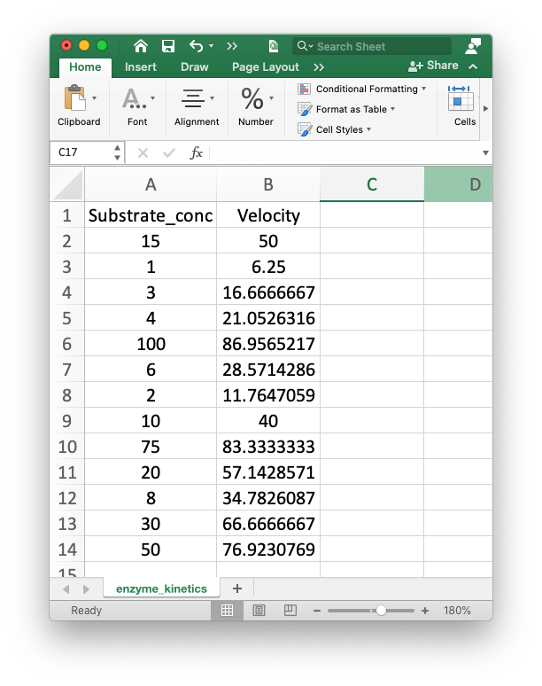

Working with Pandas¶
Overview
Questions
- How can I use import data for analysis in my notebook?
Objectives:
- Import the pandas library.
- Use pandas library funtions to import data from a csv file.
- Import data from a .csv formatted file.
Keypoints:
- Use the pandas library to create dataframes from csv formatted data.
What is pandas and why do we use it?¶
Pandas is a python library that is designed to work with two dimensional data arrays. It is built on numpy, another python library that specializes in numerical analysis. Numpy also has the ability to create and analyze data arrays. If you are not familiar with arrays, here are some simple examples.
1D arrays¶
A one dimensional array is simply a list of items, for example, a list of the elements: H, He, Li, Be, B, etc.
2D arrays¶
A two dimensional array is an array which has rows and columns. It can have any number of columns and rows. A spreadsheet with rows and columns is analogous to a 2D array.
3D arrays¶
A three-dimensional array would be a collection of two dimensional arrays. For example, this might be a collection of x, y, and z coordinates for a structure as a function of time.
The numpy library has functions that will manage n-dimensional arrays, while pandas only works on 2D arrays. You may need numpy for nD arrays at some point, but for this workshop, we will learn to use pandas as we learn how to perform linear and nonlinear regression of laboratory data based on data in 2D arrays.
The pandas library contains powerful tools for working with 2D data arrays, including the ability to identify the rows and columns of data by unique identifiers: things like “mass protein” and “initial velocity” rather than “row 1” or “column C”). Pandas also has many more functions that we will not explore in this workshop, but here are two excellent free online resources for learning more about pandas:
Using pandas for data analysis from MolSSI
Charlie Weiss’s excellent online textbook, Scientific Computing for Chemists, which you can find on his GitHub site, SciCompforChemists
Corey Schafer’s Pandas Tutorials on YouTube
Importing python libraries¶
As we move toward data analysis, we will need to import a series python libraries. A library is a set of modules which contain related functions that can be used to complete specific tasks. Using libraries in Python reduces the amount of code you have to write. Usually a function has some type of input and gives a particular output. To use a function that is in a library, you often use the dot notation introduced in the previous lesson.
In the last lesson, we imported the os library, which can be used to assign the location of a file to a variable (e.g. datafile), so our script can be transferred between computers with different operating systems (e.g., mac vs windows). In this lesson, we will be using the numpy and pandas, and we will add a few more libraries in the future. As we proceed, we’ll build this table.
Library |
Uses |
Abbreviation |
|---|---|---|
os |
file management in operating systems |
os |
numpy |
calculations |
np |
pandas |
data management |
pd |
To start we will import the two libraries we need to complete the work in this notebook, os and pandas.
import os
import pandas as pd
Locating the data¶
To work with data in Jupyter notebooks, you must first find the data. In the file parsing lesson, we used the pwd (print working directory) command to find out where we were located on our computers. In this lesson, we will learn another command, ls, which gives us a listing of the files and folders in the working directory.
ls
Bradford_plot.png
Bradford_plot2.png
Creating_Plots_in_Jupyter_Notebooks.ipynb
File_Parsing.ipynb
Linear_Regression.ipynb
'Non-Linear Regression Part 2.ipynb'
'Nonlinear Curve Fitting Part 1.ipynb'
'Nonlinear Regression Part 1.ipynb'
'Nonlinear Regression Part 2.ipynb'
Processing_Multiple_Files_and_Writing_Files.ipynb
Working_with_Pandas.ipynb
'Workshop Schedule.ipynb'
data/
data.zip
images/
introduction.ipynb
resolutions.txt
setup.ipynb
Notice that data/ appears in a different font and is followed by a forward slash. That is because data is a folder or directory. In fact, the data folder contains the file we want to use. To get a listing of the files in the data folder, you can just type ls data. The ls command is unix/linux is similar to the dir command when you are working at the command prompt in Windows.
ls data
AP_kin.csv PDB_files/ protein_assay.csv
AP_kinetics.csv chymo_MM_data.csv protein_assay2.csv
Ground_water.csv chymotrypsin_kinetics.csv protein_samples.csv
MM_data.csv chymotrypsin_kinetics.xlsx thrombin_with_ligands.csv
MM_data1.csv enzyme_kinetics.csv
MM_data_for_NLRpt2.csv enzyme_kinetics.xlsx
You will notice a number of files and folders in the data folder. We will be working with the file, thrombin_with_ligands.csv. As a first step, we will assign the location of that file to a variable, using the path.join function from the os library.
thrombin_file = os.path.join('data', 'thrombin_with_ligands.csv')
print(thrombin_file)
data/thrombin_with_ligands.csv
Importing the data with pandas¶
As mentioned above, the pandas library has a number of excellent tools for importing data. We will be using the read_csv function from the pandas library to import our data. You may have encountered csv files before. csv stands for comma separated values. This is a format that spreadsheet programs like Excel and Google Sheets can both read and write. If you open a csv file in a text editor, it simply contains rows of information, where the information is separated by commas. The information can be integers, real numbers or strings. Here are the first four rows of the csv file that we will be exploring using pandas.
PDB ID,Method,Resolution,Structure,Ligand ID,Ligand name
3SHC,X-RAY DIFFRACTION,1.9,Human Thrombin,B01,D-phenylalanyl-N-[(4-chloropyridin-2-yl)methyl]-L-prolinamide
3P17,X-RAY DIFFRACTION,1.43,Thrombin,99P,D-phenylalanyl-N-(pyridin-3-ylmethyl)-L-prolinamide
2ZNK,X-RAY DIFFRACTION,1.8,Thrombin,31U,D-leucyl-N-(4-carbamimidoylbenzyl)-L-prolinamide
If you look at these data carefully, you can see how they could easily be arranged in a table, with the labels in the in the first row as the column headers. Before we can explore how pandas can do that for us, let’s look at the help command for the read_csv function in pandas.
help(pd.read_csv)
Notice the syntax for the command: help is followed by parentheses, which contain the function name that we want to explore. Also note that pandas is abbreviated as pd. That may seem strange at first, but you will get used to library abbreviations in short order if you work much with Jupyter notebooks, or with python in general.
If you enter this command in a cell, the output will be over 200 lines long. You can learn about all of the arguments that can be attached to the read_csv function and how they affect the dataframe. Just to give you a taste, here are the first few lines you would see.
Help on function read_csv in module pandas.io.parsers:
read_csv(filepath_or_buffer: Union[str, pathlib.Path, IO[~AnyStr]], sep=',', delimiter=None,
header='infer', names=None, index_col=None, usecols=None, squeeze=False, prefix=None, mangle_dupe_cols=True, dtype=None, engine=None, converters=None, true_values=None, false_values=None, skipinitialspace=False, skiprows=None, skipfooter=0, nrows=None, na_values=None, keep_default_na=True, na_filter=True, verbose=False, skip_blank_lines=True, parse_dates=False, infer_datetime_format=False, keep_date_col=False, date_parser=None, dayfirst=False, cache_dates=True, iterator=False, chunksize=None, compression='infer', thousands=None, decimal: str = '.', lineterminator=None, quotechar='"', quoting=0, doublequote=True, escapechar=None, comment=None, encoding=None, dialect=None, error_bad_lines=True, warn_bad_lines=True, delim_whitespace=False, low_memory=True, memory_map=False, float_precision=None)
The panda library contains many more options than we have time to explore right now, but one thing to pay special attention to is called a dataframe. The pandas dataframe is the primary data structure that is produced and manipulated by pandas functions. We can take an existing 2D data array and tell pandas to convert it to a DataFrame, or we can use the read_csv command to convert a csv file to a pandas dataframe. As our example, we will be exploring a csv file containing information about different thrombin structures found in the Protein Data Bank. So let’s create our DataFrame and explore what it contains.
thrombin_df = pd.read_csv(thrombin_file) #thrombin_df is a convenient name for our dataframe.
thrombin_df
| PDB ID | Method | Resolution | Structure | Ligand ID | Ligand name | |
|---|---|---|---|---|---|---|
| 0 | 3SHC | X-RAY DIFFRACTION | 1.90 | Human Thrombin | B01 | D-phenylalanyl-N-[(4-chloropyridin-2-yl)methyl... |
| 1 | 3P17 | X-RAY DIFFRACTION | 1.43 | Thrombin | 99P | D-phenylalanyl-N-(pyridin-3-ylmethyl)-L-prolin... |
| 2 | 2ZNK | X-RAY DIFFRACTION | 1.80 | Thrombin | 31U | D-leucyl-N-(4-carbamimidoylbenzyl)-L-prolinamide |
| 3 | 3SI3 | X-RAY DIFFRACTION | 1.55 | Human Thrombin | B03 | D-phenylalanyl-N-(pyridin-2-ylmethyl)-L-prolin... |
| 4 | 3SI4 | X-RAY DIFFRACTION | 1.27 | Human Thrombin | B04 | D-phenylalanyl-N-[(1-methylpyridinium-2-yl)met... |
| 5 | 3SV2 | X-RAY DIFFRACTION | 1.30 | Human Thrombin | P05 | D-phenylalanyl-N-(pyridin-4-ylmethyl)-L-prolin... |
| 6 | 1UVU | X-RAY DIFFRACTION | 2.80 | Bovine Thrombin | DCH | 3-(7-DIAMINOMETHYL-NAPHTHALEN-2-YL)-PROPIONIC ... |
| 7 | 1UVT | X-RAY DIFFRACTION | 2.50 | Bovine Thrombin | I48 | N-{3-METHYL-5-[2-(PYRIDIN-4-YLAMINO)-ETHOXY]-P... |
| 8 | 2C8Z | X-RAY DIFFRACTION | 2.14 | Thrombin | C2A | 1-(3-CHLOROPHENYL)METHANAMINE |
| 9 | 2C8Y | X-RAY DIFFRACTION | 2.20 | Thrombin | C3M | N-[(2R,3S)-3-AMINO-2-HYDROXY-4-PHENYLBUTYL]NAP... |
| 10 | 2C90 | X-RAY DIFFRACTION | 2.25 | Thrombin | C1M | 1-(4-CHLOROPHENYL)-1H-TETRAZOLE |
Finding information in a dataframe¶
The dataframe appears as a table. The data are in rows (“indexes”) and columns (“series”). If you want to look at the data in a single column (one series), you can use this command.
thrombin_df['Resolution']
0 1.90
1 1.43
2 1.80
3 1.55
4 1.27
5 1.30
6 2.80
7 2.50
8 2.14
9 2.20
10 2.25
Name: Resolution, dtype: float64
Check your understanding
How can you print out the ligand names for each of the structures?
Solution
thrombin_df['Ligand name']
You can use the loc function from the pandas library to get all the information from a single index or row.
thrombin_df.loc[2]
PDB ID 2ZNK
Method X-RAY DIFFRACTION
Resolution 1.8
Structure Thrombin
Ligand ID 31U
Ligand name D-leucyl-N-(4-carbamimidoylbenzyl)-L-prolinamide
Name: 2, dtype: object
You can also use the loc command to locate the information from a specific cell. If you enter the index (row) of 2 and the column ‘Resolution’, the resolution for the structure in the third row is returned. You may be thinking, “Resolution is the third column. Why does python think it is column 2?” Remember that python starts counting at 0. So the number for the first column is 0 and the number for the third column is 2.
thrombin_df.loc[2, 'Resolution']
1.8
There are times when you may want to use the index number and column number to locate the information in that cell in the dataframe. In this case, you can use the iloc (for integer locate) command, which accepts integers in the form of [row, column].
thrombin_df.iloc[2,2]
1.8
If you only want to look at the first five rows of a dataframe, you can use the head function; you can use the tail function to look at the last five rows. We always include () after the name of the function. This is how we can pass arguments into the function. Try using the argument 3 in the head command.
thrombin_df.head()
| PDB ID | Method | Resolution | Structure | Ligand ID | Ligand name | |
|---|---|---|---|---|---|---|
| 0 | 3SHC | X-RAY DIFFRACTION | 1.90 | Human Thrombin | B01 | D-phenylalanyl-N-[(4-chloropyridin-2-yl)methyl... |
| 1 | 3P17 | X-RAY DIFFRACTION | 1.43 | Thrombin | 99P | D-phenylalanyl-N-(pyridin-3-ylmethyl)-L-prolin... |
| 2 | 2ZNK | X-RAY DIFFRACTION | 1.80 | Thrombin | 31U | D-leucyl-N-(4-carbamimidoylbenzyl)-L-prolinamide |
| 3 | 3SI3 | X-RAY DIFFRACTION | 1.55 | Human Thrombin | B03 | D-phenylalanyl-N-(pyridin-2-ylmethyl)-L-prolin... |
| 4 | 3SI4 | X-RAY DIFFRACTION | 1.27 | Human Thrombin | B04 | D-phenylalanyl-N-[(1-methylpyridinium-2-yl)met... |
thrombin_df.head(3)
| PDB ID | Method | Resolution | Structure | Ligand ID | Ligand name | |
|---|---|---|---|---|---|---|
| 0 | 3SHC | X-RAY DIFFRACTION | 1.90 | Human Thrombin | B01 | D-phenylalanyl-N-[(4-chloropyridin-2-yl)methyl... |
| 1 | 3P17 | X-RAY DIFFRACTION | 1.43 | Thrombin | 99P | D-phenylalanyl-N-(pyridin-3-ylmethyl)-L-prolin... |
| 2 | 2ZNK | X-RAY DIFFRACTION | 1.80 | Thrombin | 31U | D-leucyl-N-(4-carbamimidoylbenzyl)-L-prolinamide |
thrombin_df.tail()
| PDB ID | Method | Resolution | Structure | Ligand ID | Ligand name | |
|---|---|---|---|---|---|---|
| 6 | 1UVU | X-RAY DIFFRACTION | 2.80 | Bovine Thrombin | DCH | 3-(7-DIAMINOMETHYL-NAPHTHALEN-2-YL)-PROPIONIC ... |
| 7 | 1UVT | X-RAY DIFFRACTION | 2.50 | Bovine Thrombin | I48 | N-{3-METHYL-5-[2-(PYRIDIN-4-YLAMINO)-ETHOXY]-P... |
| 8 | 2C8Z | X-RAY DIFFRACTION | 2.14 | Thrombin | C2A | 1-(3-CHLOROPHENYL)METHANAMINE |
| 9 | 2C8Y | X-RAY DIFFRACTION | 2.20 | Thrombin | C3M | N-[(2R,3S)-3-AMINO-2-HYDROXY-4-PHENYLBUTYL]NAP... |
| 10 | 2C90 | X-RAY DIFFRACTION | 2.25 | Thrombin | C1M | 1-(4-CHLOROPHENYL)-1H-TETRAZOLE |
Sorting data with pandas¶
You can also sort the data using the pandas sort_values function. To sort the thrombin_df dataframe into ascending Resolution values, use the following command.
thrombin_df.sort_values('Resolution')
thrombin_df
| PDB ID | Method | Resolution | Structure | Ligand ID | Ligand name | |
|---|---|---|---|---|---|---|
| 0 | 3SHC | X-RAY DIFFRACTION | 1.90 | Human Thrombin | B01 | D-phenylalanyl-N-[(4-chloropyridin-2-yl)methyl... |
| 1 | 3P17 | X-RAY DIFFRACTION | 1.43 | Thrombin | 99P | D-phenylalanyl-N-(pyridin-3-ylmethyl)-L-prolin... |
| 2 | 2ZNK | X-RAY DIFFRACTION | 1.80 | Thrombin | 31U | D-leucyl-N-(4-carbamimidoylbenzyl)-L-prolinamide |
| 3 | 3SI3 | X-RAY DIFFRACTION | 1.55 | Human Thrombin | B03 | D-phenylalanyl-N-(pyridin-2-ylmethyl)-L-prolin... |
| 4 | 3SI4 | X-RAY DIFFRACTION | 1.27 | Human Thrombin | B04 | D-phenylalanyl-N-[(1-methylpyridinium-2-yl)met... |
| 5 | 3SV2 | X-RAY DIFFRACTION | 1.30 | Human Thrombin | P05 | D-phenylalanyl-N-(pyridin-4-ylmethyl)-L-prolin... |
| 6 | 1UVU | X-RAY DIFFRACTION | 2.80 | Bovine Thrombin | DCH | 3-(7-DIAMINOMETHYL-NAPHTHALEN-2-YL)-PROPIONIC ... |
| 7 | 1UVT | X-RAY DIFFRACTION | 2.50 | Bovine Thrombin | I48 | N-{3-METHYL-5-[2-(PYRIDIN-4-YLAMINO)-ETHOXY]-P... |
| 8 | 2C8Z | X-RAY DIFFRACTION | 2.14 | Thrombin | C2A | 1-(3-CHLOROPHENYL)METHANAMINE |
| 9 | 2C8Y | X-RAY DIFFRACTION | 2.20 | Thrombin | C3M | N-[(2R,3S)-3-AMINO-2-HYDROXY-4-PHENYLBUTYL]NAP... |
| 10 | 2C90 | X-RAY DIFFRACTION | 2.25 | Thrombin | C1M | 1-(4-CHLOROPHENYL)-1H-TETRAZOLE |
Notice that the numbers in the first column (the index values) are not in order. If you type “thrombin_df” now, you will get back the unsorted dataframe. However, if you want to keep retain the sorting, you can add inplace = True to the command.
thrombin_df.sort_values('Resolution', inplace = True)
thrombin_df
| PDB ID | Method | Resolution | Structure | Ligand ID | Ligand name | |
|---|---|---|---|---|---|---|
| 4 | 3SI4 | X-RAY DIFFRACTION | 1.27 | Human Thrombin | B04 | D-phenylalanyl-N-[(1-methylpyridinium-2-yl)met... |
| 5 | 3SV2 | X-RAY DIFFRACTION | 1.30 | Human Thrombin | P05 | D-phenylalanyl-N-(pyridin-4-ylmethyl)-L-prolin... |
| 1 | 3P17 | X-RAY DIFFRACTION | 1.43 | Thrombin | 99P | D-phenylalanyl-N-(pyridin-3-ylmethyl)-L-prolin... |
| 3 | 3SI3 | X-RAY DIFFRACTION | 1.55 | Human Thrombin | B03 | D-phenylalanyl-N-(pyridin-2-ylmethyl)-L-prolin... |
| 2 | 2ZNK | X-RAY DIFFRACTION | 1.80 | Thrombin | 31U | D-leucyl-N-(4-carbamimidoylbenzyl)-L-prolinamide |
| 0 | 3SHC | X-RAY DIFFRACTION | 1.90 | Human Thrombin | B01 | D-phenylalanyl-N-[(4-chloropyridin-2-yl)methyl... |
| 8 | 2C8Z | X-RAY DIFFRACTION | 2.14 | Thrombin | C2A | 1-(3-CHLOROPHENYL)METHANAMINE |
| 9 | 2C8Y | X-RAY DIFFRACTION | 2.20 | Thrombin | C3M | N-[(2R,3S)-3-AMINO-2-HYDROXY-4-PHENYLBUTYL]NAP... |
| 10 | 2C90 | X-RAY DIFFRACTION | 2.25 | Thrombin | C1M | 1-(4-CHLOROPHENYL)-1H-TETRAZOLE |
| 7 | 1UVT | X-RAY DIFFRACTION | 2.50 | Bovine Thrombin | I48 | N-{3-METHYL-5-[2-(PYRIDIN-4-YLAMINO)-ETHOXY]-P... |
| 6 | 1UVU | X-RAY DIFFRACTION | 2.80 | Bovine Thrombin | DCH | 3-(7-DIAMINOMETHYL-NAPHTHALEN-2-YL)-PROPIONIC ... |
Exercise
The enzyme kinetics data from the introduction can be found in the file `enzyme_kinetics.csv` in the data directory. The only problem is that the substrate concentrations are out of order. This is how it looks in Excel:
{kind=link}
Create a dataframe from that file and use pandas functions to place the data in ascending substrate concentrations, then print the velocity at a substrate concentration of 20 micromolar. As a biochemist, you probably want to plot and analyze these data to find the Km and Vmax. We’ll get to that in a bit. The goal right now is to just have a little fun with pandas.
Solution
import os
import pandas as pd
kinetics_file = os.path.join('data', 'enzyme_kinetics.csv')
kinetics_df = pd.read_csv(kinetics_file) # kinetics_file is a variable, not a string
kinetics_df.head(0) # to find out the column labels. You can also use kinetics_df.columns to get the same output.
kinetics_df.sort_values('Substrate_conc') # once you know the column labels
kinetics_df.loc[9]